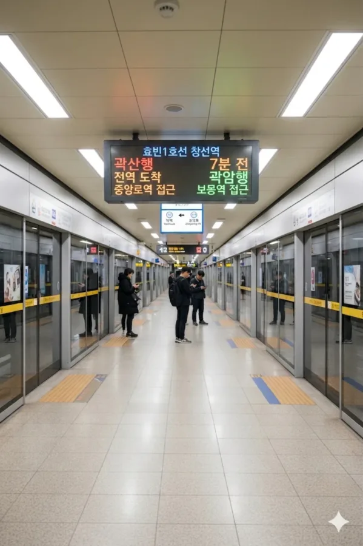

효빈 도시철도 1호선 113번 역이다. 효빈광역시 중구 창선동3가 221-6에 소재한다. 효빈 도시철도에서 가장 중요한 환승 거점 중 하나로, 본선과 탄성지선이 갈라지는 분기역이다. 본선 일반 완행열차는 물론이고 **1호선 급행열차까지 필수로 정차하는 헬게이트급 중심 역이다.** 환승 통로가 지옥이라 카더라.
1984년 1호선 1단계 구간 개통과 함께 영업을 시작했으며, 1988년 탄성지선의 시종착역 기능이 추가되면서 현재의 거대 역사가 완성되었다. 효빈 중구의 핵심 상업 지구에 위치하여 유동 인구가 엄청나며, 역사와 롯데백화점이 직접 연결되어 있어 쇼핑객 수요도 매우 높다. 지하 2층에는 효빈교통공사에서 운영하는 공식 굿즈샵이 성황리에 영업 중이다.
|
1
창선역 출구 정보
|
||
|---|---|---|
| 번호 | 주요 시설 및 방향 | 비고 |
| 1 | 효빈중부경찰서 | |
| 2 | 효빈문화회관, 온상병원 | |
| 3 | 창선사거리, 창선지하상가 진입로 | |
| 4 | 롯데백화점 효빈점 주차장 | |
| 5 | 롯데백화점 효빈점 | 연결 통로 존재 |
| 6 | 신한은행 효빈지점 | |
| 7 | 애프터글로우 호텔, 롯데시네마 효빈점 | |
연도별 일평균 승하차 인원 통계다. 1호선 전체 이용객 순위에서 상위권을 놓치지 않는 역이다.
| 창선역 이용객 통계 | ||
|---|---|---|
| 연도 | 일평균 이용객 | 비고 |
| 2020년 | 35,616명 | |
| 2021년 | 35,826명 | |
| 2022년 | 40,178명 | |
| 2023년 | 40,020명 | |
| 2024년 | 40,292명 | 안정적인 4만 명대 유지 중 |

| 약맥 ↑ | |||||||||
| ㅣ | 1번 홈 | ㅣ | ㅣ | 2번 홈 | 3번 홈 | ㅣ | ㅣ | 4번 홈 | ㅣ |
| ↓ 중앙로 (본선), ↓ 오석 (탄성지선) | |||||||||
| 1번 홈 | 1 효빈 도시철도 1호선 (본선 상행 완행) | 약맥 · 곽암해수욕장 · 곽산 방면 |
| 2번 홈 | 1 효빈 도시철도 1호선 (본선 하행 완행/급행 공용) | 중앙로 · 효빈역 · 전천 · 장선 방면 (급행 정차) |
| 3번 홈 | 1 효빈 도시철도 1호선 (탄성지선 셔틀 상행) | 곽암해수욕장 (탄성-곽산 직결 셔틀) 방면 |
| 4번 홈 | 1 효빈 도시철도 1호선 (탄성지선 하행 본선) | 오석 · 탄성 · 승남해수욕장 방면 |
| 구분 | 정류소명 | 노선 번호 |
|---|---|---|
| 순방향 | 창선역 | 9, 11, 28, 49, 10, 181, 191, 194, 292, 491 |
| 역방향 | 창선역(건너편) | 09-1, 11-1, 82, 94, 10-1, 811, 911, 914, 922, 941 |
효빈광역시 중구의 상업 중심지인 창선동과 오석동 지하를 잇는 길이 약 890m의 대형 지하도상가다. 타 지하상가들이 주로 효빈시설관리공단의 관할인 것과 달리, 이곳은 도시철도와의 연계성을 이유로 효빈교통공사가 직접 운영하고 관리하고 있다.
약 890m의 길이에 걸쳐, 창선역 쪽의 고급 상권과 오석역 쪽의 학생 상권이 자연스럽게 그라데이션을 이룬다.